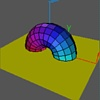

In this movie, after loading a torus initializing its view and rotating it, a second object (a square) is loaded into Geomview. It's color is set and it is moved off-screen by a

Several Objects in One Movie:Transformcommand. Then it is moved into place by aSequencecommand so that it appears to fly in from the left. Finally, the square is scaled down to a point and then removed.Note the use of
Scenecommands that break the action into several parts. These can be viewed (or made into movies) as separate units. This can help by allowing you to preview only the scene you are working on, even if the movie is much longer.The
Torus.ooglfile was created using the fileTorus.csin CenterStage. Thexyz.vectsquare.quadfiles are standard ones that come with Geomview.
Torus-3.smLoad Torus.oogl Load xyz.vect Transform {Scale .25} Torus.oogl Transform {YZ -$pi/3} Transform {XY -$pi/6} Sequence {YZ $pi/2} 7 Torus.oogl Pause 3 Scene "Slice" Load square.quad Color square.quad {1 1 0} Transform {Translate {0 -2.5 0}} square.quad Sequence {Translate {0 2.5 0}} 16 square.quad Pause 3 Scene "Disappear" Sequence {Scale 0} 16 square.quad Delete square.quad Pause 5
|
|